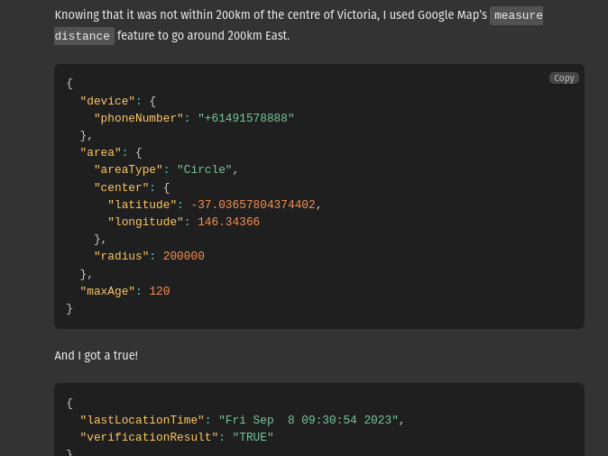
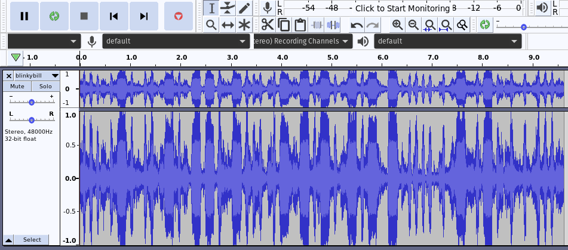
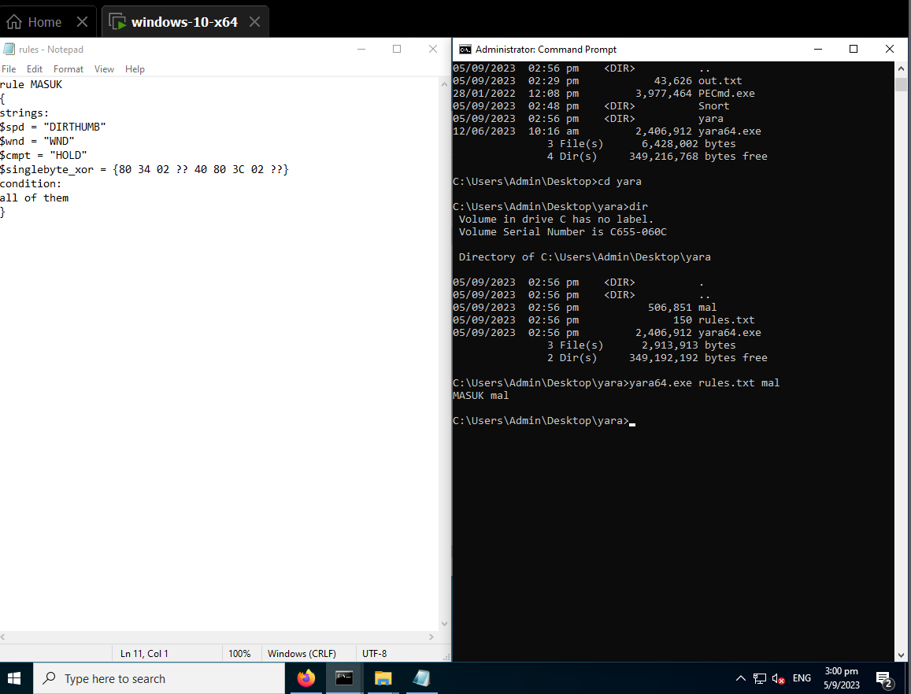
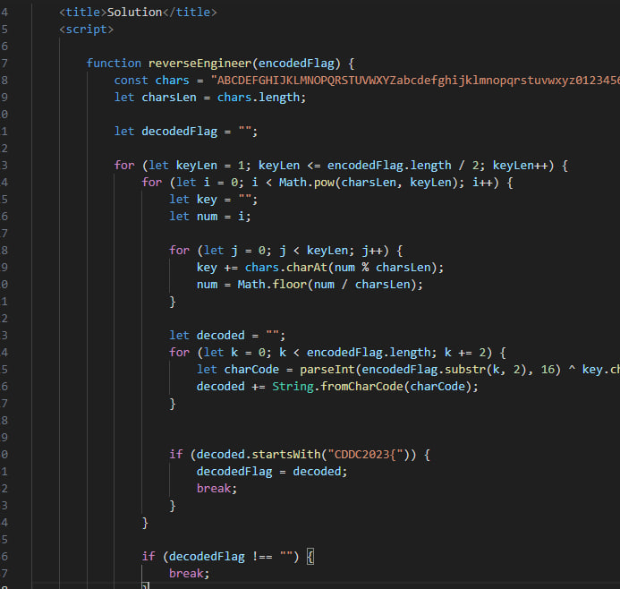
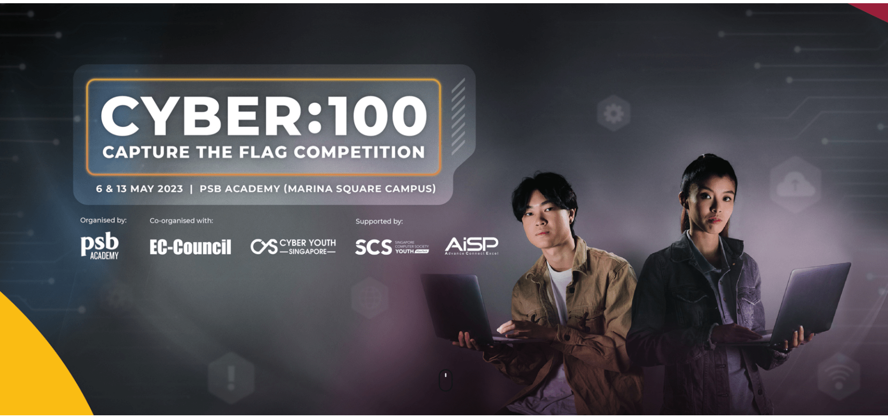

Certifications and Events
Certifications
Cisco
Networking Essentials

Cisco
Cybersecurity Essentials

Cisco
Python Essentials 1

In my free time, I enjoy exploring various online
courses to expand
my knowledge and skills. I completed the Cisco
Networking Essentials course,
which provided me with a deeper understanding of
computer networks, Cybersecurity
Essentials which taught me how to identify common cyber
threats and the Cisco Python
Essentials course, which gave me a solid foundation in
programming with Python.
These courses have helped me enhance my technical
abilities and opened
up new opportunities for me.

Events
DownUnder
CTF



DUCTF was a two-day CTF that I participated with one of
my friends. I delved into various challenges, focusing
on OSINT, crypto and misc. It was fun deciphering the
Morse code steganography challenge, especially when I
was overthinking it - trying to make a script to solve
it, when in the end, I just had to listen to it.
Also, I managed to explore GSMA's Location API, which
allowed me to 'track' a target's location using their
phone number (by verifying if the device location is
within a requested area), which was really intriguing.
Even though our team didn't top the leaderboard, we
learnt a lot!
Sentinel
Programme -
Cyber Threat Intelligence



I'm really grateful to have been selected by MINDEF as one
of the 60 students to attend this
programme on Threat Intel. The two-day workshop provided me
with valuable insights
into threat intel analysis using Splunk, and I was able to
successfully complete
almost all challenges in the threat intel CTF! Additionally,
on day two, CSIT hosted
a workshop on threat hunting, where I learnt to use Snort
and Yara to analyse a live sample of
malware and its traffic on a Windows image file.
DSTA
BrainHack - CDDC



Taking part in this CDDC CTF was highly fulfilling for me,
as I had the chance to solve numerous
challenges spanning various categories, such as forensics,
reverse engineering, network analysis, web and binary
vulnerability.
I had an amazing time, especially with the forensics challenges,as I managed to different methods to solve steganography challenges. I also managed to dabble in Wireshark to analyse network packets, and also solved my first ever reverse engineering challenge!
I had an amazing time, especially with the forensics challenges,as I managed to different methods to solve steganography challenges. I also managed to dabble in Wireshark to analyse network packets, and also solved my first ever reverse engineering challenge!
BuildingBloCS
AI June Conference


At the end of May and start of June, I participated in the
BuildingBloCS June Conference, which was
build upon the central theme of Artificial Intelligence
(AI). Through this programme,
I utilised Python's extensive libraries for AI like
Scikit-Learn, Tensorflow, OpenCV and more. At the end I,
together with my group, built an AI model to sort clothes
into its various categories aimed for reducing clothes waste
by
allowing people to exchange clothes for other clothes in
their desired categories.
Cyber:100
PSB Academy CTF



This was a team-based CTF that I attended in May 2023, and
it was a great opportunity for me to delve deeper into web
exploitation, network analysis, and system hacking.
One of the most valuable aspects of the competition was the
chance to learn and practice using various tools and
techniques. Specifically, I gained hands-on experience with
tools such as nmap, Metasploit, Aircrack-ng, Burp Suite, and
SQLmap, which helped me to develop a deeper understanding of
their capabilities and how they can be used in
different scenarios.
Overall, participating in this CTF competition was an excellent way for me to gain practical experience in the field of cybersecurity and also develop my technical skills.
Overall, participating in this CTF competition was an excellent way for me to gain practical experience in the field of cybersecurity and also develop my technical skills.


Game
On With Virtual Reality! NP ApLM

During the June holidays in 2022, I had the opportunity
to attend GoVR,
where I gained a wealth of knowledge in Immersive Media.
I was able to create my own VR
game using Unity and experimented with C# programming to
develop the game.
It was an enriching experience that allowed me to
explore and develop my skills in virtual reality
game development.